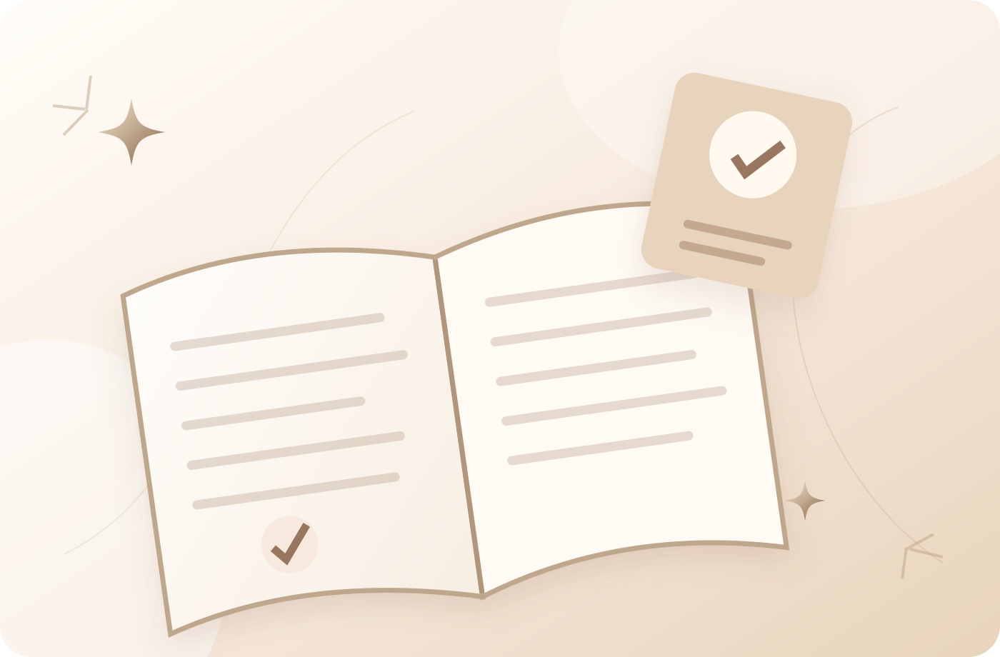

Уровень 01 · С основ
Базовый курс
Системное знакомство с нутрициологией, выбором продуктов и правилами сбалансированного питания.
- Как работает организм
- Питание и обмен веществ
- Витамины и минералы
- Вода и распространённые мифы о детоксе
- Построение сбалансированного рациона